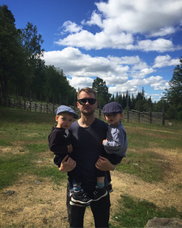

Min me-sida i kursen Databasteknologier för webben

Detta är min me/redovisa-sida för kursen Databasteknologier för webben vid Blekinge tekniska högskola.
Vem är då jag? Johan Hanses heter jag, född i Falun, till en början uppvuxen i Leksand vid sjön Siljan och senare mot tonåren i Falun. Det var egentligen mer fram och tillbaka än så, men vi säger så så länge.
Som barn och var det Nintendo och framför allt Zelda serien som var av intresse. Senare mot tonåren så upptäcktes musiken vilken upptog hela tonåren, både lyssnandet och utövandet. Detta ledde i sin tur till att det bildades band och band måste ha en hemsida. På så sätt kom jag i kontakt med HTML och byggde ett otal hemsidor med inline CSS, att koppla ett stylesheet var inget jag hade kunskap om då.
Efter gymnasium och högre studier inom ljudproduktion och religionshistoria, där jag fortfarande satt och knackade bandhemsidor och designade mySpace-sidor kopplade till musikutövandet, så var det dags att börja jobba... på riktigt...
Jag började arbeta som maskinbiträde på ett tryckeri och där arbetade jag fram till januari 2018 då jag slutade på tryckeriet, då i från rollen som produktionschef, och dessutom nybliven tvillingfar till Arvid och Elis.
Jag funderade då mycket på vad jag skulle göra härnäst, att vidareutbilda mig för att kunna byta branch blev mer och mer det som lockade och att det sedan blev mot webbutveckling låg ju där latent sedan länge. Sen om det blir mot front-end eller back-end eller båda återstår att se, i min forna roll på tryckeriet så jobbade jag mycket med it-ansvarig och utvecklade affärssystemen och ett antal SQL-queries har det blivit sen dess.